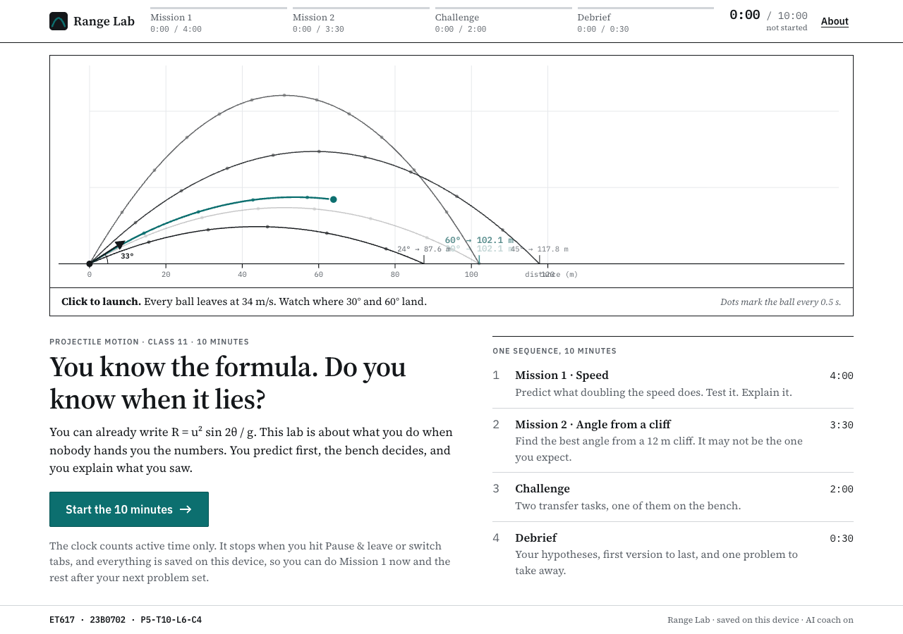
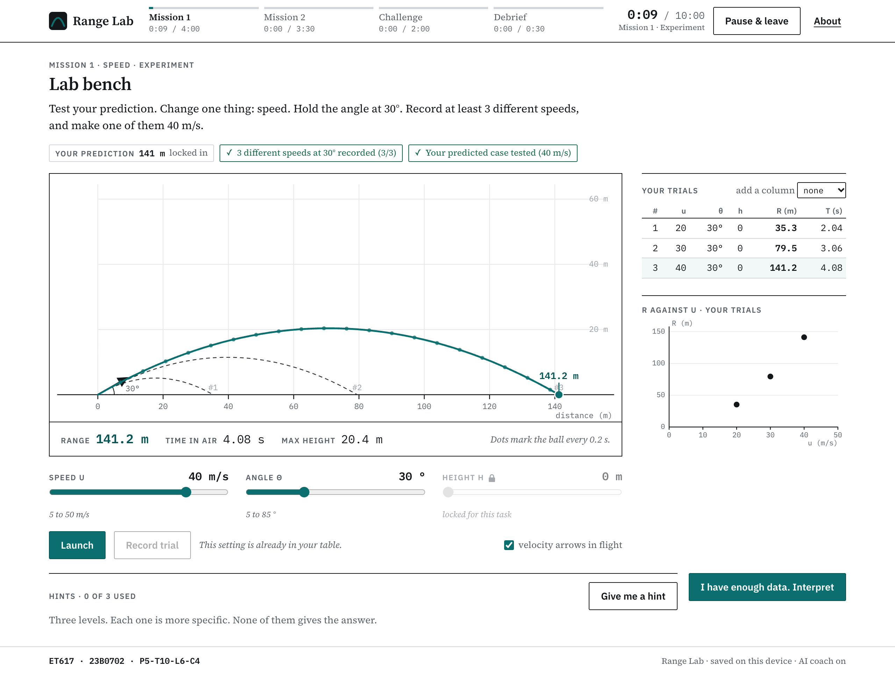
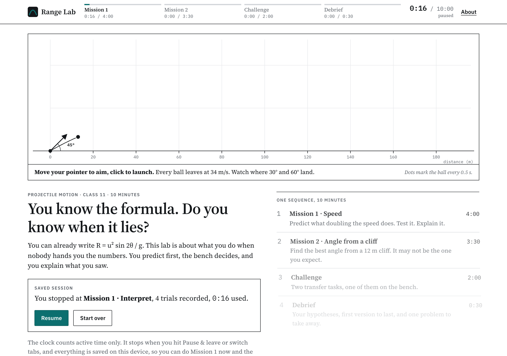
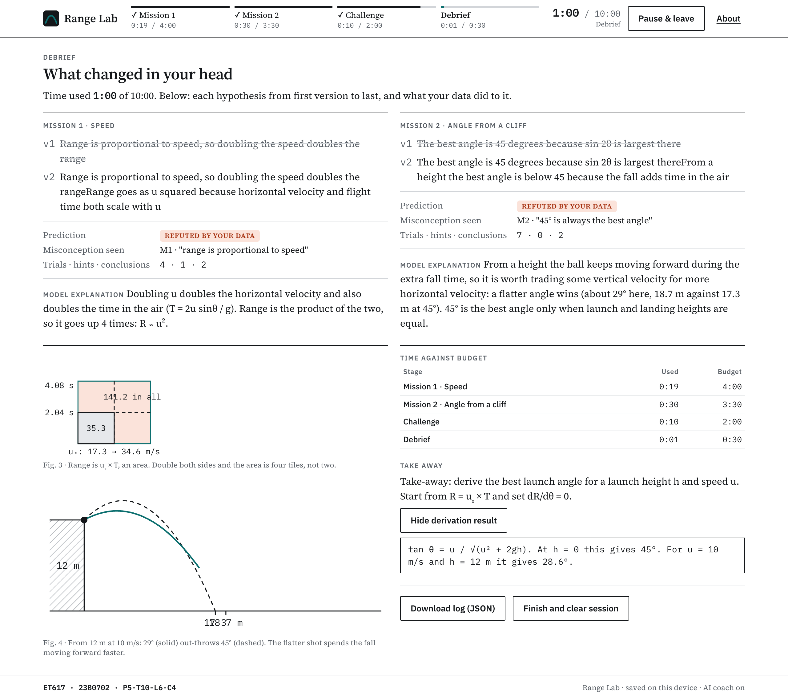
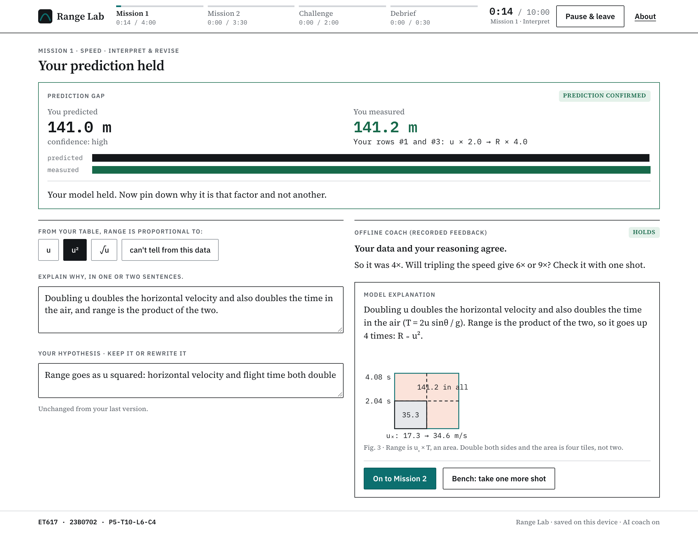
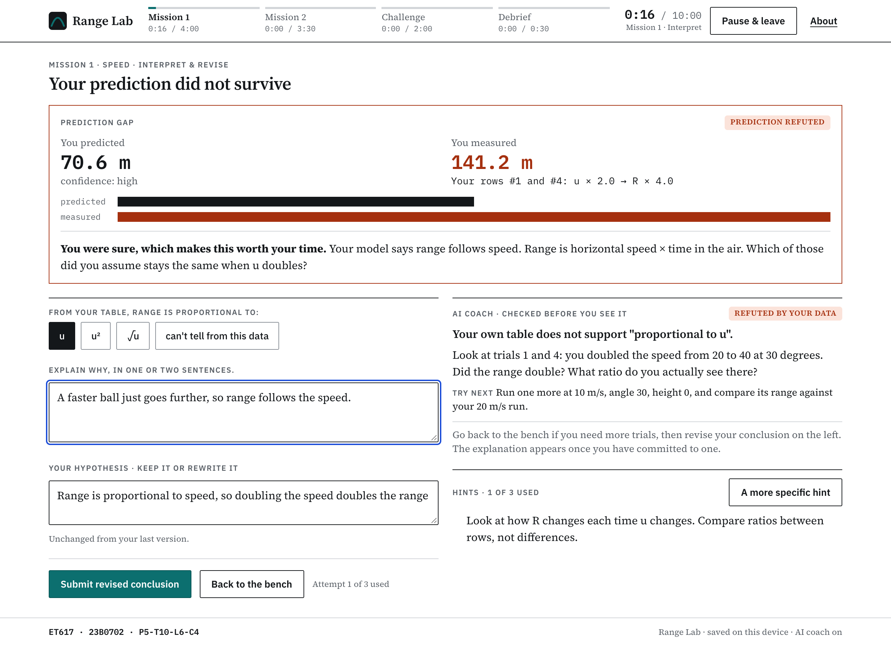
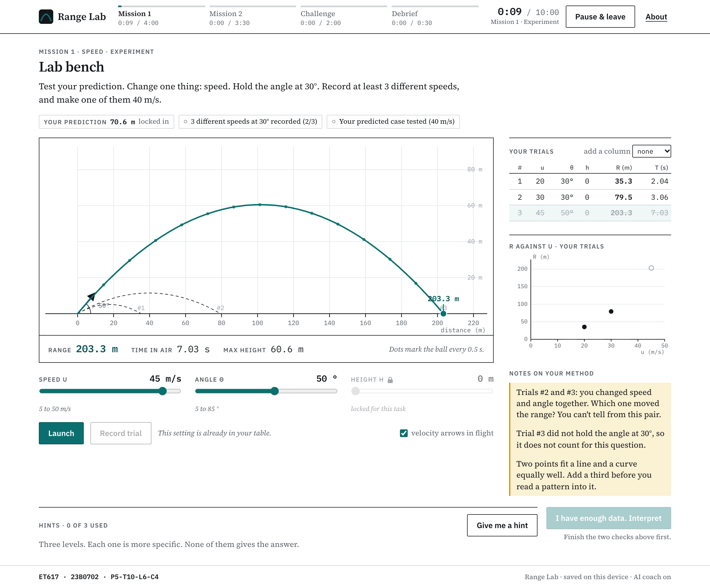
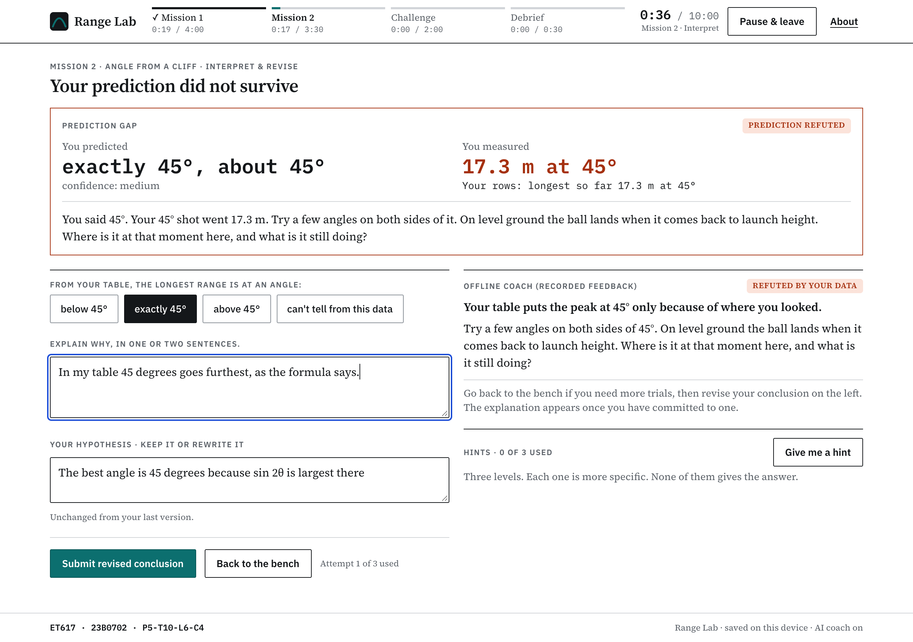

ET 617-2026 End-Semester Examination · 18 November 2026 · Sajjad Nakhwa · 23B0702
| Roll no. (ID) | 23B0702 |
|---|---|
| P · Problem | P5 · Inquiry-based virtual laboratory |
| T · Topic | P5-T10 · Projectile motion: angle and speed vs range (Cl. 11) |
| L · Learner context | L6 · High-achieving learner preparing for an Olympiad, bored by routine practice |
| C · Design constraint | C4 · 10-minute sessions: one complete sequence fits in 10 minutes; stop and resume where you left off |
| Live app | https://et617-23b0702.vercel.app |
| Repository | https://github.com/ndstab/et617-endsem-23b0702 |
| Identity token | "ET617 · 23B0702 · P5-T10-L6-C4" in the footer of every screen and on the About screen |
Strong Class 11 students can substitute into R = u² sin 2θ / g without thinking, and that fluency hides two gaps: they scale range linearly with speed, and they carry "45° is the best angle" to launches where it is false. Routine problem sheets never expose these gaps, because the formula always returns the right number and the student is never asked to commit before computing. Range Lab makes the learner commit to a prediction first, lets his own experiment confirm or refute it, and only then asks him to explain. The learner works alone at home on a laptop, in the 10 to 15 minute gaps between coaching problem sets, so one full sequence has to fit in 10 minutes and survive being interrupted.
Context of use. Where: at home, alone. When: short gaps between coaching problem sets, typically late evening. Device: his own laptop with a browser; no login and no install. Language: English.
| Name, age | Aarav Kulkarni, 16, Class 11, Pune. Preparing for NSEP and the physics olympiad. |
|---|---|
| Prior knowledge | Kinematics equations, resolving vectors into components, trig identities (including sin 2θ), basic differentiation. Can plug into R = u² sin 2θ / g fluently. Has not been asked where the formula comes from or when it stops being true. |
| Misconception M1 | "Range is proportional to speed: double the speed, double the range." He treats the scaling linearly when asked quickly, even though the formula he knows says u². |
| Misconception M2 | "45° is always the best angle." He over-generalises the level-ground result to a launch from a height. |
| Device, time | Own laptop at home; 10 to 15 minutes at a time; often interrupted by the next problem set. |
| Language | English (school and coaching medium). |
| Motivation | Problems that surprise him, and being proven wrong by evidence. Hates being spoon-fed and hates praise spam. Bored by plug-and-chug sheets. |
Concept explanation (shown only after the learner states his own conclusion, and again in the debrief). Range is horizontal velocity × time in the air: R = uₓ × T. On level ground, doubling u doubles uₓ and also doubles T (T = 2u sin θ / g), so the range goes up four times: R ∝ u². From a height, the ball keeps moving forward during the extra fall time, so it pays to trade some vertical velocity for more horizontal velocity: a flatter angle wins. 45° is the best angle only when launch and landing heights are equal. The app draws range as the area of a rectangle with sides uₓ and T (Fig. 3 in the app) so that "four tiles, not two" is visible.
| # | Stage · format | Task (actual text) | Model answer |
|---|---|---|---|
| 1 | Mission 1 · numeric prediction | "Level ground. The launch angle is fixed at 30°. At u = 20 m/s the ball lands 35.3 m away. Now you double the speed to 40 m/s. Predict the range at 40 m/s." Plus a one-line hypothesis and a confidence rating. | 141.2 m (accepted within 5%). 70.6 m (within 5%) is classified as M1. |
| 2 | Mission 1 · experiment | "Test your prediction. Change one thing: speed. Hold the angle at 30°. Record at least 3 different speeds, and make one of them 40 m/s." | A controlled table, e.g. 20, 30, 40 m/s at 30° giving 35.3, 79.5, 141.2 m. |
| 3 | Mission 1 · choice + free text | "From YOUR table, range is proportional to: u / u² / √u / can't tell from this data." Then "Explain why, in one or two sentences." | u². Doubling u doubles the horizontal velocity and also doubles the time in the air; range is the product, so it goes up 4 times. |
| 4 | Mission 2 · choice + numeric, experiment, free text | "Now you launch from the edge of a 12 m cliff at u = 10 m/s. Which angle gives the longest range: below 45° / exactly 45° / above 45°? Estimate the best angle." Then at least 4 angles at 10 m/s including his estimate, then the same conclusion form as task 3. | Below 45°, about 29° (26 to 32 accepted): 18.7 m against 17.3 m at 45°. "Exactly 45°" is classified as M2. |
| 5 | Challenge · numeric + yes/no | "Level ground, u = 30 m/s. A 27° launch and which other angle land at the same spot?" Follow-up: "Does that pair still tie from the 12 m cliff?" | 63° (complementary angles; sin 54° = sin 126°). No: from 12 m, 27° gives 93.0 m and 63° gives 79.9 m. |
| 6 | Challenge · hit the target in the simulation | "Level ground, u locked at 30 m/s. Land the ball in the target zone at 45.9 m (± 1.5 m). Find TWO different angles that do it." | 15° and 75°. |
Six tasks in four formats: numeric entry, controlled experiment, choice with free-text explanation, and hit-the-target in the simulation.
| Case | Mission 1 (speed) | Mission 2 (angle from a cliff) |
|---|---|---|
| Correct | "Your data and your reasoning agree. So it was 4×. Will tripling the speed give 6× or 9×? Check it with one shot." The model explanation and the area figure follow. | "Your table and your reasoning agree. Flatter wins from 12 m. If you raise the speed to 20 m/s, does the best angle move toward 45° or away from it? Predict, then check." |
| Misconception (M1 / M2) | Prediction gap card: "You predicted 70.6 m · You measured 141.2 m · Your rows #1 and #4: u × 2.0 → R × 4.0. Your model says range follows speed. Range is horizontal speed × time in the air. Which of those did you assume stays the same when u doubles?" On the conclusion: "Your own table does not support 'proportional to u'. If R followed u, what would R ÷ u be in every row? Compute it for two of your rows." | "You said 45°. Your 45° shot went 17.3 m. Try a few angles on both sides of it. On level ground the ball lands when it comes back to launch height. Where is it at that moment here, and what is it still doing?" On the conclusion: "Your table puts the peak at 45° only because of where you looked." |
| Other wrong | "That does not match your rows yet. Pick your slowest and fastest trial. By what factor did u change, and by what factor did R change? If you cannot tell, your speeds are too close together." | "Your table does not show that yet. Scan from 15° to 60° in steps of 10° or less. Then say where the longest range sits." |
| Right relation, weak mechanism | "The relationship is right. The mechanism is not there yet. Range is horizontal speed × time in the air. What does doubling u do to each of them?" | "The direction is right. The mechanism is not there yet. The ball passes launch height on its way down and keeps going. What is it still doing during that extra fall?" |
Hints (three levels, none gives the answer). Mission 1: (1) "Look at how R changes each time u changes. Compare ratios between rows, not differences." (2) "Divide R by u for each row. Constant? Now try R divided by u². The table can add that column for you." (3) "Range = uₓ × T. Write how each of the two depends on u." Mission 2 has the same three-level structure.
Responses to how he experiments (rule-based). "Trials #2 and #3: you changed speed and angle together. Which one moved the range? You can't tell from this pair." · "Two points fit a line and a curve equally well. Add a third before you read a pattern into it." · "All your speeds are within 5 m/s of each other. The spread is too small to see a pattern." · "You have only tried 45° and above. That is one side of the question."
URL: https://et617-23b0702.vercel.app · Stack: Vite + React + TypeScript + Tailwind CSS, single-page app, one Vercel serverless function (/api/coach). No login, no database; everything is saved in localStorage. The project was first scaffolded with create-next-app and then replaced with a hand-written Vite setup (both visible in the commit history); no UI library and no code from the course project is used.
| # | Screen / state | Learner input | System output | Goes to |
|---|---|---|---|---|
| 1 | Home / Resume card | Start, Resume, Start over | 10-minute plan with per-stage budget; if a session exists: "You stopped at Mission 2 · Experiment, 5 trials recorded, 5:40 used." | 2, or the saved step |
| 2 | Predict (×2 missions) | Numeric prediction (and a choice in Mission 2), one-line hypothesis, confidence | Scenario figure; no verdict | 3 |
| 3 | Lab bench (×2) | Sliders, Launch, Record trial, add a computed column, hint | Trajectory with ghost trails and metre scale, readouts, trials table, scatter of his trials, checklist, experiment notes | 4 |
| 4 | Interpret & revise (×2) | Relationship choice, explanation, keep or rewrite hypothesis | Prediction gap card, coach question (AI or recorded), model explanation only after a committed conclusion | 3 (more trials), next mission, or 5 |
| 5 | Challenge | Angle entry, yes/no, launches at a target | Three-way feedback, hit counter, miss distance | 6 |
| 6 | Debrief | Show derivation, download log | Hypothesis history v1 → vN, misconception seen, hints, time against budget, model explanations, take-away derivation | 1 |
| 7 | About | AI on/off, download log, clear session | Identity, card, persona, outcomes, what the AI does, credits | back |
| 8 | Top bar (every screen) | Pause & leave, About | Stepper with time used / budget per stage, active timer out of 10:00 | 1 |
C4 visibly implemented. (a) The top bar shows active time against 10:00 and each stage against its budget (4:00, 3:30, 2:00, 0:30). (b) The clock stops on "Pause & leave", on the About screen and when the tab is hidden. (c) Every state change is saved under one key, et617-23b0702-session-v1; closing the tab and reopening lands on the resume card and continues at the exact step with trials, hints and hypotheses intact. (d) Past 10:00 the learner is not locked out: a banner offers "Jump to debrief" or "Keep going".




| (a) Learner who responds correctly | (b) Learner who shows misconception M1 | |
|---|---|---|
| Prediction | 141 m, "range goes as u² because both uₓ and T double", confidence high | 70.6 m, "range is proportional to speed, so doubling speed doubles range", confidence high |
| Experiment | 20, 30, 40 m/s at 30° | 20, 30 m/s, then 45 m/s at 50° (confounded), then 40 m/s at 30° |
| System response at the bench | Checklist completes; no notes | Note: "you changed speed and angle together … You can't tell from this pair"; the confounded row is struck through and does not count |
| Prediction gap card | "Prediction confirmed · Your model held. Now pin down why it is that factor and not another." | "Prediction refuted · You predicted 70.6 m · You measured 141.2 m · u × 2.0 → R × 4.0 · You were sure, which makes this worth your time. … Which of those did you assume stays the same when u doubles?" |
| After the conclusion | Verdict "Holds"; push-further question (tripling: 6× or 9×?); model explanation and area figure shown immediately | Verdict "Refuted by your data"; one coach question; the model explanation is withheld; he revises the hypothesis, may return to the bench, and can ask for graded hints |




There is one AI feature: the inquiry coach on the Interpret screen. Everything else (physics, verdicts, experiment notes, hints, model answers) is deterministic code.
| What the AI does | Reads the learner's explanation against his own trials, classifies it, and asks ONE Socratic question (at most 40 words) plus one suggested next trial. It never calculates and never decides right or wrong on its own. |
|---|---|
| Model call | POST https://inference.hyde.tech/v1/chat/completions, model hyde/glm-5.3-flash, reasoning_effort: "low", max_tokens: 700, from the serverless function api/coach.ts. The key is a Vercel environment variable (HYDE_API_KEY), never in the repository. Typical latency 1 to 3 s. |
| Input it receives | JSON: mission, hypothesis, prediction {value, choice, confidence}, trials [{n, u, angle, h, range, time}], chosen_relation, explanation, rule_verdict (from the app's own rules), hint_level. |
| Output | {"verdict": "correct" | "partial" | "m1_linear" | "m2_always45" | "other", "question": string, "suggest_trial": string} |
| Checks before the learner sees it | In checkReply() on the server: (1) parses as JSON; (2) verdict is one of the five allowed values; (3) question present and under 300 characters, suggestion under 200; (4) leak filter rejects any reply containing "u²", "u^2", "squared", "four times", "4x", "quadrupl…", "sin 2", "below 45", "less than 45" and similar; (5) in Mission 2, any number from 26 to 32 is rejected (the best angle is about 29°). On the client: (6) the rule verdict wins. The AI's verdict can only downgrade a rule-correct conclusion to "half way" when the explanation does not name the mechanism; it can never mark a wrong relationship as right. |
| Fallback | If the call fails, exceeds 6 seconds, is refused, or fails any check, the app shows the written rule-based feedback for that verdict with the label "Offline coach (recorded feedback)" and logs an ai_fallback event with the reason. The About screen has an "AI coach on" switch; with it off the whole app still works. |
You are a Socratic physics olympiad mentor inside a projectile-motion virtual lab.
The learner is a strong Class 11 student who can already use R = u^2 sin(2 theta) / g. He is bored by routine practice, hates being spoon-fed and hates praise.
You receive JSON with: mission, hypothesis, prediction, trials (his own recorded data), chosen_relation, explanation, rule_verdict, hint_level.
- Mission "m1": level ground, angle fixed at 30 degrees, he varies launch speed. Known misconception m1_linear: "range is proportional to speed, so doubling the speed doubles the range".
- Mission "m2": launch from a 12 m cliff at 10 m/s, he varies the angle. Known misconception m2_always45: "45 degrees is always the best angle".
Your job:
1. Classify his EXPLANATION as one of: "correct" (names the real mechanism), "partial" (right relationship, mechanism missing or vague), "m1_linear", "m2_always45", "other".
2. Ask ONE question, at most 40 words, that moves him one step forward using HIS OWN trials. Peer-level tone. No praise, no emojis.
3. Suggest ONE next trial in words (which variable to change and in which direction), or an empty string if none is needed. The bench allows speed 5 to 50 m/s, angle 5 to 85 degrees, height 0 to 30 m.
Hard rules:
- Never state the relationship between range and speed.
- Never state or write a formula.
- Never state the best angle, and in mission m2 never name any specific angle between 20 and 40 degrees.
- Never do arithmetic or quote a computed number that is not already in his trials.
- If his explanation is correct, ask a question that extends it, do not repeat it back.
Respond with ONLY a JSON object, no markdown, no other text:
{"verdict": "correct" | "partial" | "m1_linear" | "m2_always45" | "other", "question": string, "suggest_trial": string}
Input (abridged): {"mission":"m1","hypothesis":"Range is proportional to speed, so doubling speed doubles range",
"prediction":{"value":70.6,"confidence":"high"},
"trials":[{"n":1,"u":20,"angle":30,"h":0,"range":35.3},{"n":2,"u":30,"angle":30,"h":0,"range":79.5},
{"n":3,"u":45,"angle":50,"h":0,"range":203.3},{"n":4,"u":40,"angle":30,"h":0,"range":141.2}],
"chosen_relation":"u","explanation":"A faster ball just goes further, range follows the speed.","rule_verdict":"misconception"}
Model output (passed all checks): {"verdict":"m1_linear","question":"Look at trials 1 and 4: you doubled the speed from 20 to 40
at 30 degrees. Did the range double? What ratio do you actually see there?","suggest_trial":"Run one more at 10 m/s, angle 30,
height 0, and compare its range against your 20 m/s run."}
In the same walkthrough the Mission 2 reply failed the checks, so the learner saw the recorded feedback labelled
"Offline coach (recorded feedback)" and an ai_fallback event was logged.
How the design supports learning. The sequence is predict → observe → explain. A fluent learner will not re-examine a formula he trusts unless his own committed prediction fails, so the app withholds all theory until he has (1) committed a number, a hypothesis and a confidence level, (2) produced his own data, and (3) stated a conclusion. The cognitive conflict is made concrete on the prediction gap card: his number next to his measurement, and a ratio computed from his own rows. A wrong prediction made with high confidence is called out ("You were sure, which makes this worth your time") because confidently held errors are the ones most worth correcting. The challenge tasks then ask him to transfer the idea (complementary angles; the tie breaking from a height) so that the level-ground formula is repositioned as a special case.
Feedback and scaffolding. Feedback is contingent: correct answers get a harder question instead of praise; misconceptions get one question that points at the flawed assumption; three hint levels move from "what to look at" to "what to compute" to "the structure of the argument", and the learner chooses when to take them. The bench also coaches the method (LO3): confounded trials, too few points, bunched values and one-sided searches each trigger a specific note. Topic tools are built in: a metre scale and equal-scale axes on the bench, a strobe trail (the ball's position at equal time steps) with velocity-component arrows in flight, a computed-ratio column (R ÷ u, R ÷ u², R ÷ √u) and a scatter of his own trials with no theory curve.
How C4 shaped the design. Ten minutes forced two short missions instead of one long open exploration, a per-stage budget on the stepper, a fast launch (0.9 to 1.7 seconds, longer when the time in the air is longer), one combined hypothesis-and-reason field, and a debrief of 30 seconds. Because he is interrupted often, state is saved on every action and the resume card says exactly where he stopped. The clock counts active time only so that an interruption does not eat the budget, and running over is shown but never punished.
How L6 shaped the design. No theory-first page, no praise, no multiple-choice drill: a strong learner gets surprise, evidence and a harder follow-up. The variables are not fully locked (he can change the angle in Mission 1), so designing a controlled experiment is a real decision he can get wrong. The take-away is a derivation (tan θ = u / √(u² + 2gh)), which is the level this learner wants.
| Outcome | Assessment items / rubric | Log data used | Success |
|---|---|---|---|
| LO1 | Post-test: (i) "At a fixed angle, speed goes from 15 to 45 m/s. By what factor does the range change, and why?" (ii) explain-in-two-sentences item scored 0 to 2: 2 = names both uₓ and T scaling, 1 = says u² without mechanism, 0 = linear. | prediction_submitted (verdict, confidence), task_answered for the Mission 1 conclusion, number of attempts, hypothesis_revised | At least 80% score 2 on the post-test item; learners who predicted 70.6 m reach a correct conclusion within 3 attempts |
| LO2 | Post-test: "From a 20 m tower at 15 m/s, is the best angle above, at or below 45°? Explain." Delayed transfer after one week: the same question for a launch that lands on a raised platform (best angle above 45°). Rubric 0 to 2 on the mechanism (forward motion during the extra fall). | Mission 2 prediction choice and estimate, angles tried, experiment_flag: one-side, task 5 follow-up answer | At least 75% correct direction with mechanism on the post-test; at least 60% on the delayed transfer item |
| LO3 | Process rubric scored from the log: controlled trials (0/1), at least 3 distinct values with adequate spread (0/1), predicted case tested (0/1), hypothesis revised after a refuted prediction (0/1). | trial_recorded sequences, experiment_flag events (confound, bunched, two-points), hypothesis_revised | Fewer confound flags in Mission 2 than in Mission 1 for the same learner; at least 80% score 3 of 4 |
| C4 | Does one sequence fit in 10 minutes, and does resume work? | elapsedSeconds, per-stage seconds, pause / resume events | Median active time at debrief ≤ 10:00; every resumed session continues at the saved step |
| AI | Is the coach safe and useful? | ai_call latency, ai_fallback reasons | Zero leaked answers in a manual review of 50 coach replies; fallback rate under 15% |
The app already records all of these events with timestamps; "Download log (JSON)" on the About and Debrief screens exports them. A small pilot (8 to 10 olympiad aspirants, pre-test of two prediction items, the lab, then the post-test, with a one-week delayed transfer item) would be enough to check the targets above.
| # | Tool | Used for | Export |
|---|---|---|---|
| 1 | Claude Code (desktop app), one session | Reading the exam paper and listing deadlines; creating the repository; validating my design write-up against the deliverables; writing the code, DESIGN.md and this report draft; deploying to Vercel; testing both learner paths on the live app; two rounds of visual mockups. | Full chat log submitted as .txt on Moodle |
| 2 | hyde/glm-5.3-flash (Hyde inference gateway) | The in-app inquiry coach (D6). Not used for writing code or content. | Prompt in D6 and in api/coach.ts |
What was mine. The card choice, the learner, the two misconceptions, the three outcomes, all six tasks with their numbers and accepted ranges, the feedback rules (never reveal on the misconception path, push further on the correct path), the leak-filter idea, the rule-verdict-wins rule and the 10-minute budget were written by me before any code was generated. I asked the assistant not to choose the card for me. I also chose the visual direction ("C1 · classic text") from two rounds of mockups and asked for the home page and the bench to feel alive rather than static.
Where I accepted AI suggestions. (1) Leaving the angle unlocked in Mission 1, so a confounded experiment is actually possible and LO3 is a real decision. (2) Requiring that the predicted case (40 m/s, or my estimated angle) is one of the trials, so the gap card always has a measurement to compare with. (3) Merging "one-line reason" and "hypothesis" into one field to save time inside the 10 minutes. (4) A computed-ratio column and equal-scale axes as topic tools.
Where the AI was wrong or needed checking. (1) It first scaffolded Next.js; I had specified Vite, so the starter was replaced. (2) The first model configuration spent its whole token budget on hidden reasoning and returned nothing; this was found by testing the endpoint and fixed with reasoning_effort: "low". (3) A test reply from the coach said "does the range double or quadruple", which gives the answer away; the leak filter now rejects "quadrupl…". (4) The coach suggested a 60 m/s trial although the slider stops at 50; the prompt now states the slider limits. (5) The launch animation depended on animation frames and could fail to "land" in a background tab; a timer now guarantees it. (6) All physics numbers in my write-up were re-computed in code before use (35.3, 141.2, 17.3, 18.7, 28.6°, 45.9, 93.0, 79.9).
Judgement. I kept the AI away from anything that decides correctness: verdicts come from numeric rules, numbers come from physics.ts, and the coach can only ask a question that has passed the checks. That is also why the app works with the AI switched off.